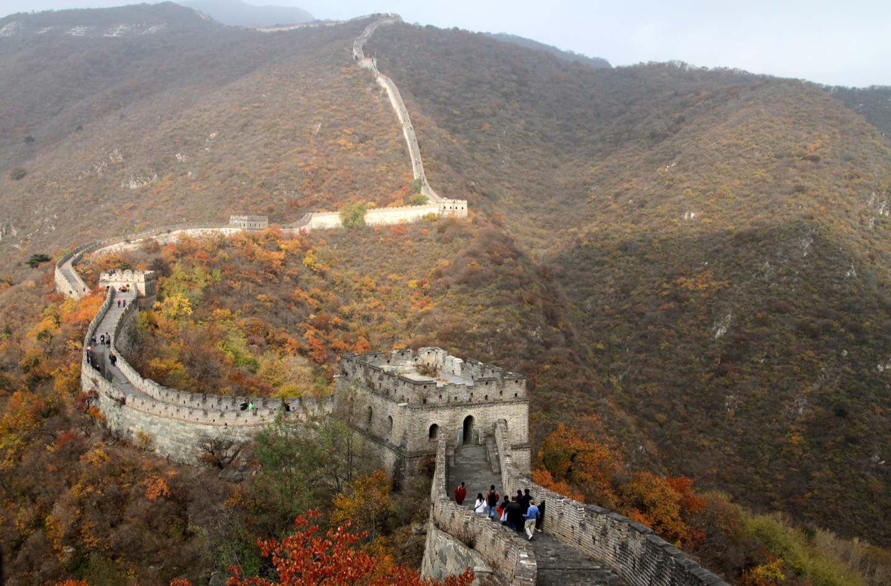

선월드 왕푸징에서 머물며 만리장성과 베이징 중앙축을 걷는 4박 5일.
인천과 서우두를 왕복합니다. 선월드에서 매일 출발하며, 근교와 시내 관람을 다른 날로 나눴습니다.

항공편과 숙소는 확정. 자금성, 장성 투어와 북경대 방문을 준비합니다.
OZ333·OZ334와 선월드 왕푸징 4박.
12월 15일 오전권 두 장.
케이블카 포함 픽업형과 왕징 집결형.
12월 16일 오후 캠퍼스 방문 문의.
지도 핀을 누르면 일차별 상세 일정으로 이동합니다. 연결선은 방문 순서입니다.